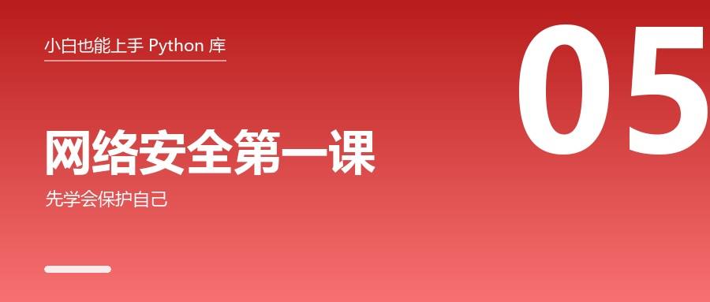

网络安全第一课：先学会保护自己

🎬 场景：你写了人生第一个注册登录功能，把用户密码存进了数据库。
三年后数据库被拖库，你发现 —— 所有人密码都是明文。
这不是段子，是真实发生过的无数次事故。
这篇讲程序员最该先学会的 5 件安全小事，以及"安全方向到底该学什么"。
⚠️ 先划一条法律红线
这篇会提到一些安全相关的库，它们都是双刃剑。
合法使用的前提，至少满足一个：
- 是你自己的设备或网络
- 你有书面授权
- 在靶场 / CTF 比赛里练习
扫描或攻击未授权的系统，在国内可能触犯《刑法》第 285 / 286 条。
合法练手平台（都免费）：
- PortSwigger Web Security Academy —— 全球公认最好的 Web 安全练习场
- OWASP Juice Shop —— 一个"故意写满漏洞"的购物网站
- Hack The Box / TryHackMe / PicoCTF
本文所有示例都写成"只打本机"的形式，你可以放心跑。
一、最容易搞混的两个概念：哈希 vs 加密
这是新手第一大认知错误，一定要分清：
| 哈希（摘要） | 加密 | |
|---|---|---|
| 能还原吗 | ❌ 不能（单向） | ✅ 能（有钥匙就行） |
| 用来干什么 | 校验、存密码、去重 | 保护"必须还原"的数据 |
| 例子 | SHA256、bcrypt | AES、RSA |
一句话：
哈希 = 只能对指纹，不能反推原文。
加密 = 能上锁也能开锁。
搞混这两个，就会写出"用 base64 当加密"、"用 MD5 存密码"这种经典事故。
二、hashlib：给文件算个"指纹"
它是什么
把任意长度的内容压成一串固定长度的字符。同一个内容永远同一个指纹；改一个字，指纹完全不同。
import hashlib
print("sha256:", hashlib.sha256(b"hello").hexdigest())实测输出：
sha256: 2cf24dba5fb0a30e26e83b2ac5b9e29e1b161e5c1fa7425e73043362938b9824它有什么用
- 校验文件有没有被改过（下载大文件后比对 sha256）
- 秒传 / 去重（内容一样 → 指纹一样）
- 校验数据完整性
实战：给一个大文件算指纹（不用担心内存）
import hashlib
def file_sha256(path, chunk=8192):
h = hashlib.sha256()
with open(path, "rb") as fp:
while True:
b = fp.read(chunk)
if not b:
break
h.update(b)
return h.hexdigest()
print(file_sha256("某个大文件.zip"))⚠️b"hello"前面的b表示字节。哈希只能处理字节，字符串要先.encode()。
三、hmac：带"密钥"的指纹，防止别人伪造
它是什么
普通哈希谁都能算 —— 那别人改了数据再算一次哈希，你就被骗了。
hmac 的做法是：加一把只有你知道的密钥，别人没有钥匙就算不出来。
import hmac, hashlib
sig = hmac.new(b"我的密钥", b"要签名的数据", hashlib.sha256).hexdigest()
print("签名:", sig)
print("验证通过:", hmac.new(b"我的密钥", b"要签名的数据", hashlib.sha256).hexdigest() == sig)实测输出：
签名: 5031fe3d989c6d1537a013fa6e739da2f6991c2a3dab0b0e5a2c1c9c36d3bb3e
验证通过: True用途：接口签名（防止请求被篡改）、Webhook 验签（确认是对方发的）。
四、secrets：生成"猜不到"的随机值
一个高频事故
import random
验证码 = random.randint(100000, 999999) # ❌ 千万别这么写为什么不行：random 是伪随机，算法固定，只要知道种子就能预测出你生成的所有验证码。
正确写法：
import secrets
print("随机数:", secrets.randbelow(100))
print("登录 Token:", secrets.token_urlsafe(12))
print("6 位验证码:", "".join(str(secrets.randbelow(10)) for _ in range(6)))实测输出（每次都不一样，这就是重点）：
随机数: 37
登录 Token: Y5zUIIfYx_N4zZKQ
6 位验证码: 436911| 用途 | 用哪个 |
|---|---|
| 抽签、洗牌、游戏 | random 就行 |
| 密码、Token、验证码、密钥 | 必须用 secrets |
五、bcrypt：存密码的唯一正确姿势
先看错误示范
import hashlib
hashed = hashlib.md5(b"user123").hexdigest() # ❌ 经典事故为什么错：
- MD5 太快了 —— 现代显卡一秒能试几十亿次
- 没有"盐" —— 所有人都用同一个密码，哈希值就一样，一查彩虹表全暴露
正确姿势
pip install bcryptimport bcrypt
# 注册时：把密码变成哈希，存进数据库
password = b"user-password-123"
hashed = bcrypt.hashpw(password, bcrypt.gensalt())
print("存进数据库的:", hashed[:29], "...")
# 登录时：拿用户输入去校验（哈希不可逆，不需要"解密"）
print("密码对不对:", bcrypt.checkpw(b"user-password-123", hashed)) # True
print("密码对不对:", bcrypt.checkpw(b"wrong-password", hashed)) # False为什么 bcrypt 是对的
| 特性 | 说明 |
|---|---|
| 故意很慢 | 一次要几十毫秒 → 暴力破解直接不现实 |
| 自动加盐 | 同一个密码，两个用户存出来的哈希也不同 |
| 自带成本参数 | 以后电脑变快了，调高参数即可 |
💡 一句话记住：存密码只有一种正确答案 —— bcrypt 或 argon2。
MD5 / SHA1 / SHA256 都不行。
六、cryptography：真正意义上的"加密"
它是什么
和哈希相反，加密是可逆的：有钥匙就能还原。用于保护"必须还原"的数据。
pip install cryptographyfrom cryptography.fernet import Fernet
key = Fernet.generate_key() # 生成一把钥匙（一定要保存好！）
f = Fernet(key)
token = f.encrypt(b"我的秘密")
print("密文:", token[:40], "...")
print("解密:", f.decrypt(token))三个必须知道的常识
- 钥匙丢了，数据就永远打不开了（这不是 bug，是特性）
- 别在代码里硬编码密钥 —— 用环境变量或
.env - 千万别用
base64当"加密" —— 它只是编码，谁都能解开
正确管理密钥的方式
pip install python-dotenv新建一个 .env 文件：
API_KEY=sk-xxxxxxxx
DB_PASSWORD=my-secretimport os
from dotenv import load_dotenv
load_dotenv()
print("读到密钥:", os.getenv("API_KEY"))实测输出（demo.env 里写的是 API_KEY=test-123 / NAME=小李）：
读到密钥: test-123
读到名字: 小李🚨 一定要做：把.env加进.gitignore！
不然你的密钥会跟着代码传到 GitHub 上，几分钟内就可能被盗用。
GitHub 上有专门的机器人，24 小时扫描新提交的 API Key。
七、socket：网络编程的"地基"
它是什么
socket 是操作系统留给程序的网络接口。你听到的所有网络词（TCP、端口、连接）最后都落到它身上。理解它，才知道 requests 和浏览器在背后干了什么。
import socket
def check(host, port, timeout=1):
"""能连上返回 True，连不上返回 False"""
with socket.socket(socket.AF_INET, socket.SOCK_STREAM) as s:
s.settimeout(timeout)
return s.connect_ex((host, port)) == 0
print("本机 1 端口开放吗:", check("127.0.0.1", 1))
print("本机 65500 端口开放吗:", check("127.0.0.1", 65500))
print("本机 IP:", socket.gethostbyname(socket.gethostname()))实测输出：
本机 1 端口开放吗: False
本机 65500 端口开放吗: False
本机 IP: 10.120.0.140💡 127.0.0.1 就是"本机自己"。练手永远先拿它当目标。
八、更推荐的方向：做一个"防守的人"
新手容易被"黑客技术"吸引，但安全行业真正缺人的是防守。而且这些技能正当、实用、还能写进简历：
| 工具 | 干什么 | 一句话用法 |
|---|---|---|
| bandit | 扫描你自己代码的安全漏洞 | bandit -r ./myproject |
| pip-audit | 检查依赖库有没有已知漏洞 | pip-audit |
| yara-python | 恶意样本特征匹配（防守核心技能） | 写规则扫可疑文件 |
| osv-scanner / safety | 依赖漏洞扫描 | 上线前体检 |
pip install bandit pip-audit
bandit -r ./myproject # 扫自己的代码
pip-audit # 扫依赖一个正当又有意思的入门项目
用 yara 写一个"可疑文件快速体检脚本"，扫自己电脑的下载目录，检查有没有包含 "powershell + DownloadString" 这类特征。
这比"学攻击"更适合写进简历，也不会踩法律红线。
九、想走安全方向？这个顺序最稳
- 计算机网络 + Linux 命令 + HTTP 协议 ← 这三样比任何工具都重要 10 倍
- Python 编程能力
socket→requests→ 手工测试（Burp Suite / OWASP ZAP）- 靶场刷题（PortSwigger 免费、Juice Shop、HTB）
- 选方向：Web 安全 / 渗透测试 / 二进制逆向 / 流量分析 / 应急响应 / 安全开发
- 底线：只打靶场、只测授权目标、发现漏洞先报告不公开利用
🧰 附：安全相关的「常用工具速查」
这几张表建议收藏——它们是写代码时会反复用到的。
🔐 hashlib（哈希 / 指纹）
| 工具 | 干什么 | 典型写法 |
|---|---|---|
hashlib.sha256(数据).hexdigest() |
算 SHA256 指纹 | 数据要 b"…" 或 .encode() |
hashlib.md5() |
MD5（只用来校验文件，别存密码） | — |
h.update(块) |
分块喂数据 | 大文件不占内存 |
hashlib.file_digest(f, "sha256") |
一行算文件指纹 | Python 3.11+ |
hmac.new(key, msg, hashlib.sha256) |
带密钥的指纹 | 防伪造 |
hmac.compare_digest(a, b) |
安全比较两个签名 | 别用 == |
🎲 secrets（安全随机）
| 工具 | 干什么 | 典型写法 |
|---|---|---|
secrets.token_urlsafe(24) |
生成登录 Token / 邀请码 | 最常用 |
secrets.token_hex(16) |
生成十六进制密钥 | 密钥、盐 |
secrets.randbelow(100) |
0~99 的随机数 | 抽奖 |
secrets.choice(字符串) |
随机选一个字符 | 生成密码 |
⚠️ 别用random做这些——它可预测。random只适合抽签、洗牌、造测试数据。
🔑 bcrypt（存密码）
| 工具 | 干什么 | 典型写法 |
|---|---|---|
bcrypt.gensalt() |
生成"盐" | rounds=12 可调难度 |
bcrypt.hashpw(密码, 盐) |
注册时：算出哈希存库 | 密码要 b"…" |
bcrypt.checkpw(输入, 哈希) |
登录时：校验 | 返回 True/False |
记住：哈希不可逆，所以是"校验"不是"解密"。
🔒 cryptography（加密）
| 工具 | 干什么 | 典型写法 |
|---|---|---|
Fernet.generate_key() |
生成对称密钥 | 丢了就解不开 |
Fernet(key).encrypt(数据) |
加密 | 返回密文 |
Fernet(key).decrypt(密文) |
解密 | 密钥不对会报错 |
rsa.generate_private_key() |
生成非对称密钥对 | 公钥加密、私钥解密 |
x509 相关 API |
证书处理 | 进阶用途 |
🌐 socket（网络地基）
| 工具 | 干什么 | 典型写法 |
|---|---|---|
socket.socket(AF_INET, SOCK_STREAM) |
建 TCP 插座 | IPv4 + TCP |
.connect_ex((host, port)) |
探端口（返回 0 = 通） | 只扫自己 |
.settimeout(1) |
防卡死 | 一定要设 |
.bind() / .listen() / .accept() |
写服务端 | 被动等连接 |
.sendall() / .recv() |
收发数据 | 字节流 |
socket.gethostbyname(域名) |
域名 → IP | 快速查解析 |
🛡 防守方向的工具
| 工具 | 干什么 | 典型命令 |
|---|---|---|
bandit |
扫自己代码的安全问题 | bandit -r ./myproject |
pip-audit |
扫依赖库的已知漏洞 | pip-audit |
yara-python |
恶意文件特征匹配 | 自己写规则扫文件 |
faker |
造假数据（别拿真实数据练） | Faker("zh_CN").name() |
mitmproxy |
看自己 App 的请求 | mitmweb |
📌 这篇你学到了
| 概念 | 正确做法 |
|---|---|
| 存密码 | bcrypt / argon2（绝不用 MD5） |
| 生成验证码 / Token | secrets（绝不用 random） |
| 校验数据没被改 | hashlib / hmac |
| 加密敏感数据 | cryptography（不是 base64！） |
| 管理密钥 | .env + python-dotenv + .gitignore |
| 学习攻击技术 | 只在靶场 / 授权目标 |
🎯 留个小作业（安全又实用）
写一个"文件指纹校验器"：
- 给一个文件夹里的所有文件算 SHA256
- 输出成一张表（文件名 + 指纹）
- 下次再跑，自动找出哪些文件被改过
这个脚本可以直接用来防止"重要文件被偷偷改了"。
下一篇：《AI 入门：从"中文分词"到"调用大模型"》
👉 如果这篇帮你避开了"MD5 存密码"这个大坑，点个「赞」，也转发给你的开发同事 —— 这个错误每年都还在发生。
👉 关注我，下一篇讲 AI：不训练模型，也能做出 AI 应用。